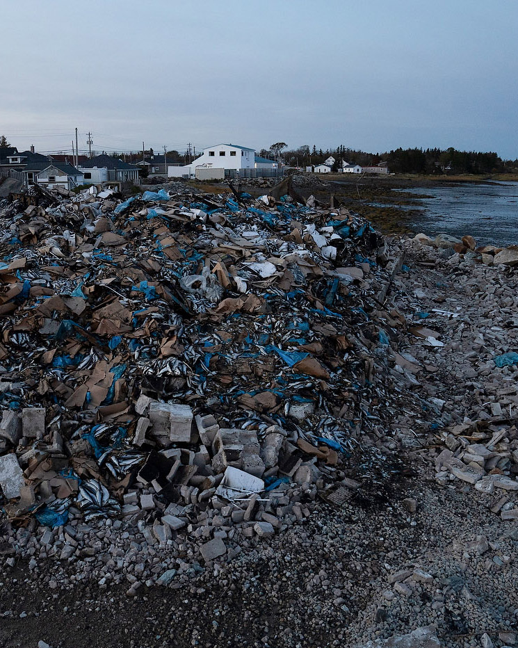
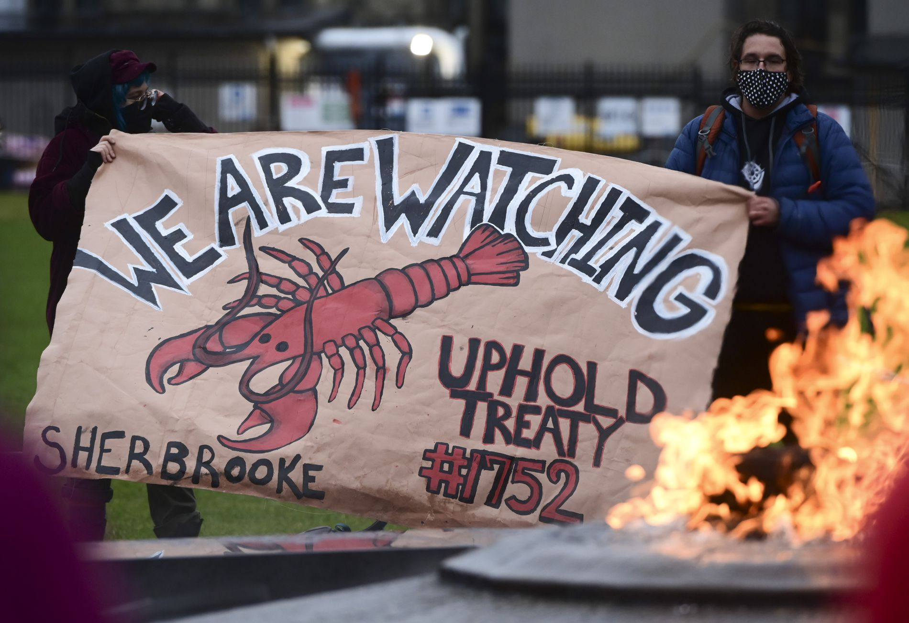
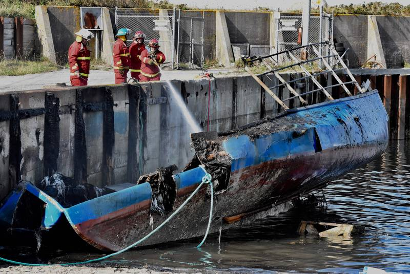
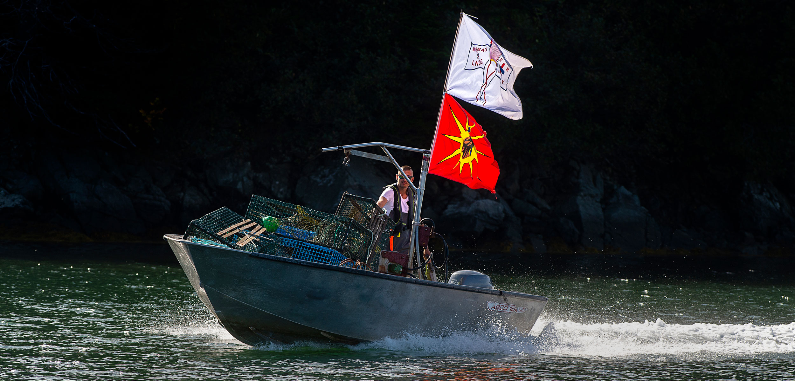
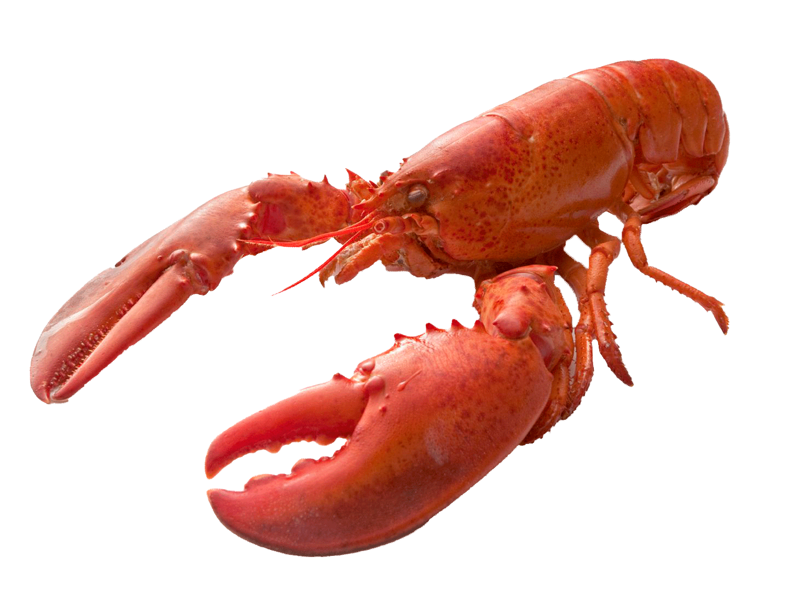
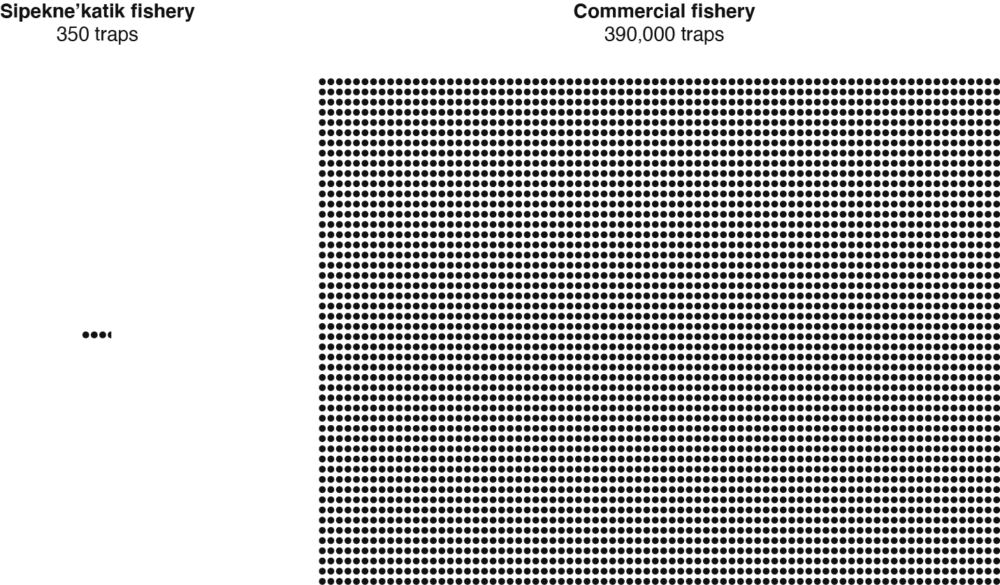

02
Mi'kmaq
Mi'kmaq
Lobster Dispute

What Happened?





SUPRISE!
It's not about
It's not about
conservation either

01
Demand action
Please sign this petition to pressure officials like Justin Trudeau and Stephen McNeil to take action to stop the mistreatment and violence against our first peoples.
02R. v. Marshall Treaty
This treaty, created in 1993 granted the rights for Indigenous people to fish to earn a moderate livlihood. They are fighting for this to be upheld by the government.
03List of actions
This is a comprehensive list of ways to support Mi'kmaq treaty rights and livelihood fisheries.